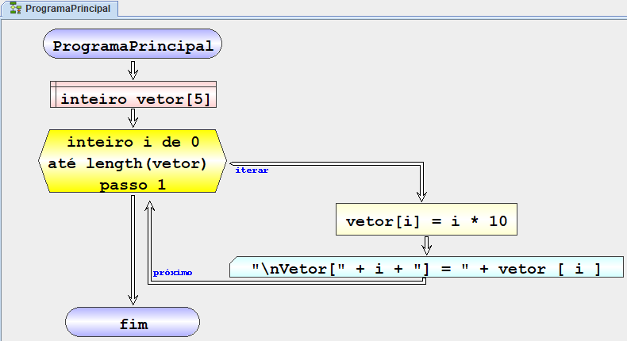

| Fluxograma | Pseudocódigo |
|---|---|
|  | inicio Programa principal
definir inteiro array[8][4]
iterar inteiro i de 0 até length(array) passo 1
iterar inteiro j de 0 até length(array[i])
passo 1
executar array[i][j] = i * 10 + j
escrever "\t" + array[i][j]
fim iterar
escrever "\n"
fim iterar
fim Programa principal
|